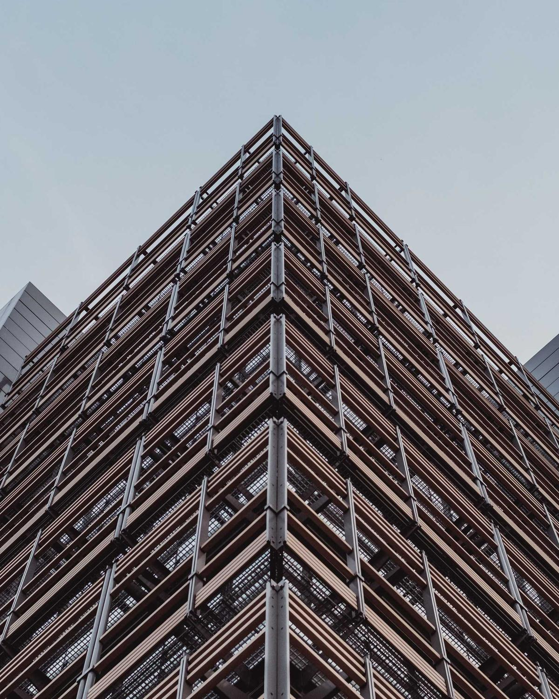
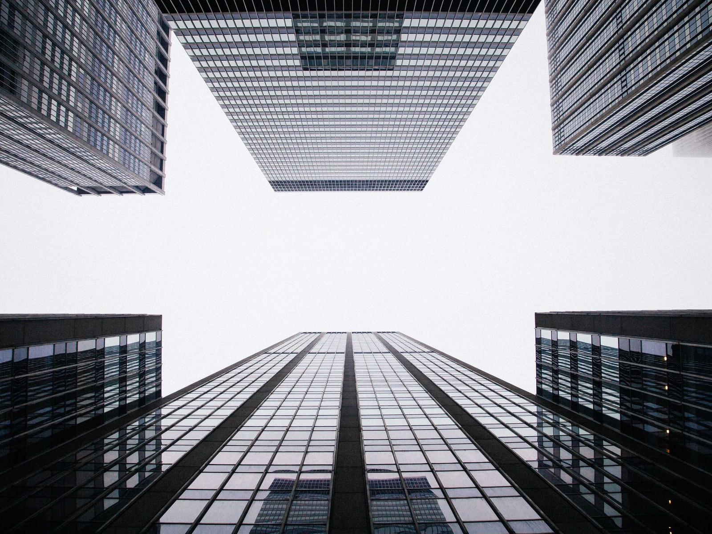
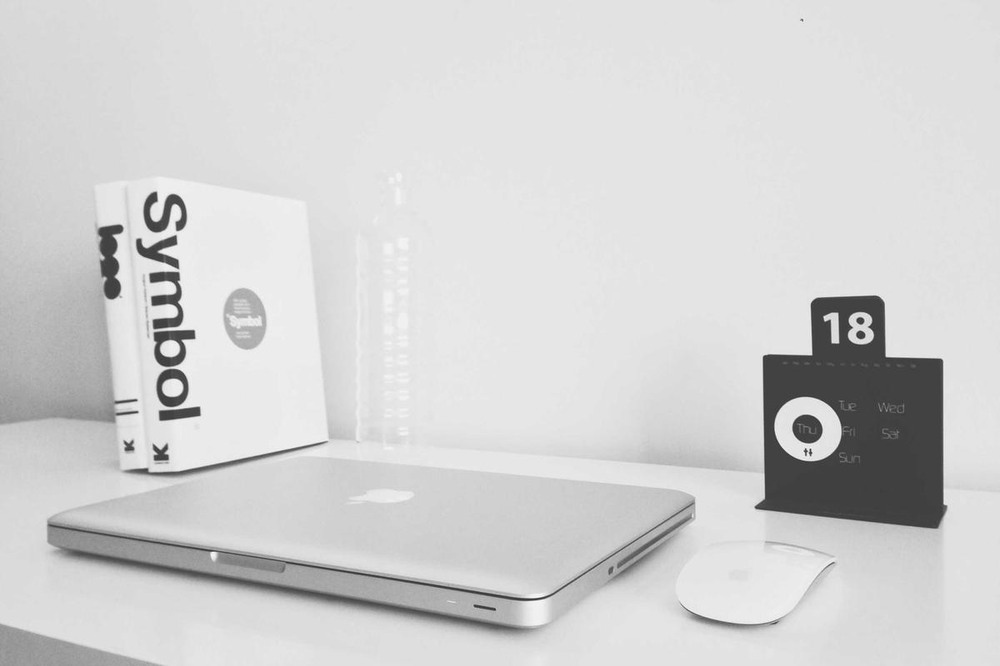
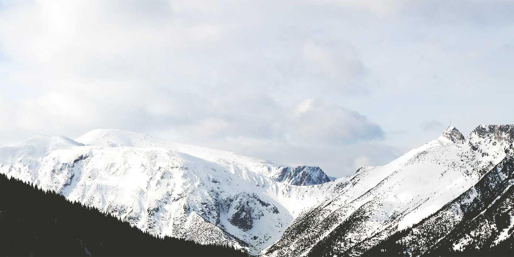

01
Photography
Pictures made for the grid they will be printed on.
Read morePatterns
Prototype 3
October 2026
Heroes, features, media and text, articles, galleries, lists, people, calls to action and footers — the wireframes most sites are built from, each composed on the same twelve columns.
Press G to see each one as a wireframe.
P01
Text on one side, a large image on the other. The image takes six columns and its own proportion; on a phone it follows the text at full width.
Studio for typography and grids
Identities, books and websites built from a single measurement, so that every part of them belongs together.

P02
An image as the section background, edge to edge. The text doesn’t float on the photograph: it is set on a block of paper that sits on the columns, so it stays readable whatever the image does.
Exhibition · 12 November
Photographs of modern facades, hung on a grid of twelve.
P03
A strip of key numbers. Four across on a desktop, two on a phone; the numbers are tabular so they line up.
P04
Features, services or projects: small images in a row of equal columns, each with a number, a title and a line of text. Every image has the same proportion, so the titles line up.
P05
Alternating rows of an image and a short text. The image keeps six columns, the text four; the side changes, the measurements don’t.
Principle 1
Every distance on the page is a multiple of the line. It is why nothing needs a border to show that it belongs.
Principle 2
Text and images start on the same column lines. The eye finds the edge once and then reads down it.

P06
Long text with images at four sizes: small in the aside and in the margin, medium in the text column, large across the main column, and full bleed. Captions to large images move into the aside.
An image on a grid is not a picture in a frame. It is a block of the page, as measured as the text around it.
The first decision about an image is not what it shows but how many columns it takes. Three columns make it a note in the margin; six make it a partner to the text; nine or twelve make it the subject of the page. Once the width is chosen, the proportion follows, and the image is cropped to it — not the other way round.
This sounds like a restriction, and it is one. But it is the kind of restriction that saves time. A designer who has to decide the size of every image from scratch makes a hundred small decisions on every page, and each of them can go a little wrong. A designer who chooses from four widths makes one decision, and it is almost impossible to make badly.
That is the discipline that makes a page of mixed images look calm. If every picture arrives at its own size, the page becomes a collage. If every picture takes a whole number of columns, the images line up with the text, with each other and with the edges of the page, and the reader sees one composition.
None of this is new. The printed catalogues of the 1950s and 60s were built exactly like this: a grid of columns cut into fields, photographs cropped to whole fields, captions set in the same small size wherever they appeared. What looked like a freely composed page was a set of rules followed very carefully. The freedom was in the choice of pictures and in where to leave the page empty.
The width of an image says how important it is. A reader takes in the size of a picture before they take in what it shows, so the size is the first thing the page tells them. A small picture is a detail, a footnote, a piece of evidence. A large one is a statement. Getting this wrong is the most common way an article goes out of balance: every image set at the same generous width, so that nothing stands out and the text becomes the gaps between pictures.
A useful test is to ask what the reader would lose if the image were half the size. If the answer is nothing — the detail is still visible, the point is still made — then it should be smaller. If the answer is the point of the picture, then it has earned its width. Most images in most articles turn out to be medium or small.

A medium image is the workhorse. It takes exactly the width of the text, so it sits in the reading line rather than beside it, and the eye moves from the paragraph above to the picture and on to the paragraph below without changing course. Its caption is set directly underneath, in the small size, and it should say something the picture doesn’t: where, when, who, or why it is here.
Because it is the same width as the text, a medium image also keeps the right edge of the column calm. A page of running text with a few medium images still reads as one column. That is worth protecting: the moment an image is a little wider or a little narrower than the text, the column loses its edge, and the page starts to look assembled rather than set.
A small image can sit beside the paragraph it belongs to, in the margin column, the way a note would. It is close enough to be read with the text and small enough not to interrupt it. On a phone it simply follows the paragraph.
Small images are where a grid shows its patience. They need room around them more than any other size, because there is so little of them; crowded by text on two sides they become decoration. In the margin they have the whole column to themselves, and the white space below them does as much work as the picture.
The grid is an aid, not a guarantee. It permits a number of possible uses and each designer can look for a solution appropriate to his personal style.
Once an image has a width and a proportion, it has to be cropped to fit them. This is where the picture gets its second chance. A photograph taken at 3 : 2 and cropped to a square loses a third of its area, and choosing which third is an editorial act. Crop to the subject and the image becomes a statement; leave space around the subject and it becomes a place.
On the web the crop is made with object-fit: cover and a focal point, so the same photograph can be a tall portrait on a phone and a wide landscape on a desktop without being exported twice. The grid decides the frame; the focal point decides what stays in it. Without the focal point, the browser crops from the centre, which is right surprisingly often and wrong at exactly the moments it matters — a face cut off at the forehead, a horizon in the middle of the frame.
A large image spans the whole main column, from the edge of the text to the edge of the page. Its caption moves into the aside, where the labels live, and lines up with the bottom of the picture.
A large image changes the pace of the page. The reader slows down, looks, and then has to find their way back to the text. That is why the text continues in exactly the column it left, and why the caption is in the aside rather than under the picture: the eye, coming back from the image, finds the left edge of the text where it expects it.
Large images also need their neighbours to be quiet. A large image followed directly by another large image is no longer a moment, it is a gallery, and a gallery has its own layout. In an article, a large image is best surrounded by at least a few paragraphs of text on each side.
And sometimes the picture is the page. A full-bleed image leaves the grid altogether and runs to both edges of the screen. It is the loudest thing a layout can do, so it is used once, and the text that follows returns to exactly the same column it left.

Full bleed. Edge to edge, 21 : 9.
Four sizes are enough. Between them they cover the note, the illustration, the feature and the event — and because each of them is a whole number of columns, any combination of them still looks as if it was planned.
The rule is simple to write down and takes years to follow well: decide the width first, make it a whole number of columns, crop the picture to the frame and not the frame to the picture, and let the text come back to the same edge every time. Everything else is choosing good photographs, which no grid can do for you.
P07
A modular grid. The columns are cut into fields three lines high, and every image takes whole fields in both directions — the system of the printed catalogue. Captions are keyed by number, in a field of their own.
Plates
P08
The journal index: a thumbnail in the aside column, the title and summary in the text column, the details in the margin. One row per entry, a hairline between them.
Why the most important part of a layout is the part with nothing in it.
How a print grid survives the move to a page that has no fixed size.
An image takes a number of columns first, and finds its picture second.
P09
A testimonial or a pull quote with a small portrait. The portrait takes the aside; the quote is set large in the main column.
“They gave us a system instead of a style. Two years later, we are still finding new things to do with it.”
P10
A team or a list of contributors. Portraits in black and white so that different photographs read as one set.
Ada Lindqvist
Typography
Paul Okafor
Photography

Mira Sand
Editing
Jonas Berg
Code
P11
An image as background again, this time printed as a duotone in ink over the accent. The section switches to the dark palette, so light text and buttons come for free.
Two weeks for a grid, a type scale and a first page. Then we decide together what comes next.
P12
Negative sections change the atmosphere of a page without leaving it. None of them is black: each is a dark paper with a little colour, so a page can move from light to graphite to night and still feel like one piece of print. Text, hairlines, buttons and the accent follow on their own.
Everything on the page is derived from these values.
Dark paper also colours negative sections without a tone of their own.